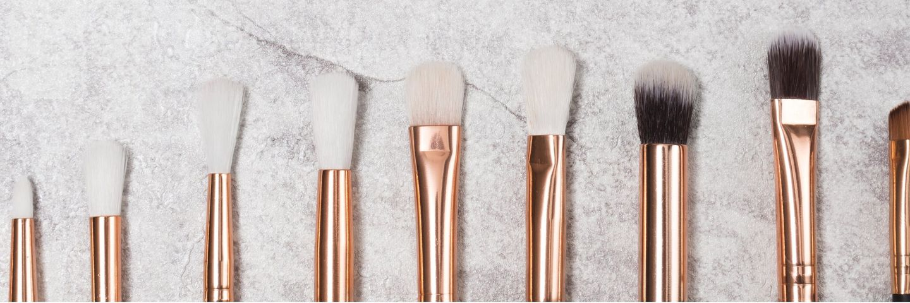
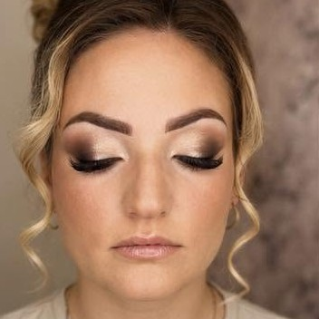
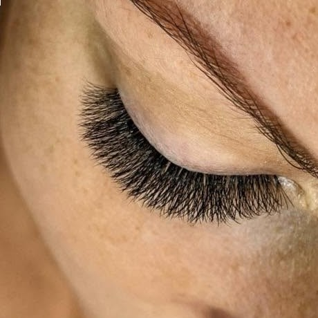
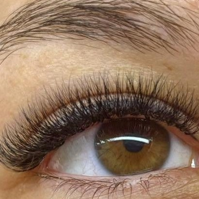
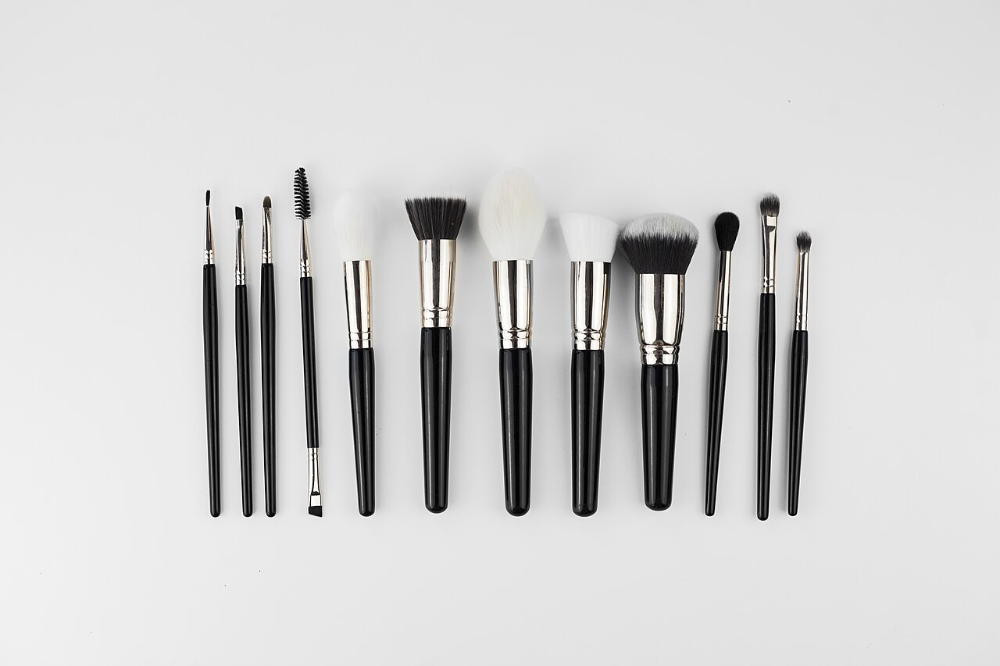

November 10-től új helyen: Pure Kozmetika, Gyömrő
Műszempilla és smink Gyömrőn
Pillaépítés, alkalmi és menyasszonyi smink, sminkoktatás. Hétköznap 8:00-tól.
Helyszín és nyitvatartás
Nyitvatartás
- Hétfő
- 8:00–18:00
- Kedd
- 8:00–15:00
- Szerda
- 8:00–18:00
- Csütörtök
- 8:00–15:00
- Péntek
- 8:00–15:00
- Szombat
- Smink egyeztetéssel
- Vasárnap
- Zárva
- BejelentkezésPrivát üzenetben
- Garancia72 óra a pillákra
Árak és szolgáltatások
Töltés 25 napon belül, ha a szett 40%-a még fent van. Pillás házirend




Váradi Eszter véleménye
„A legtartósabb és legszebb szempillákat készíti nekem. Hálás vagyok, hogy rátaláltam. A szemöldököm is pont olyan, ahogy szeretem.”